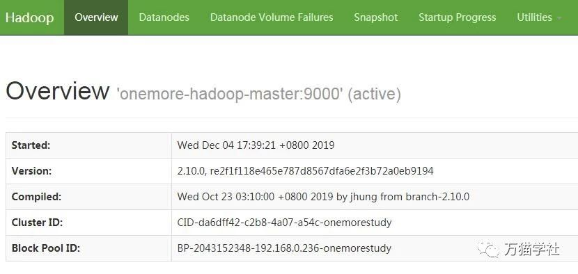

Hadoop一般有三种运行模式，分别是：
这里介绍的就是如何搭建一个Hadoop完全分布式集群。
欢迎关注微信公众号：万猫学社，每周一分享Java技术干货。
准备了四个服务器，IP为192.168.0.236、192.168.0.237、192.168.0.238、192.168.0.239，其中192.168.0.236作为主节点，其他3个作为从节点。具体版本信息如下：
欢迎关注微信公众号：万猫学社，每周一分享Java技术干货。
在各个服务器上修改对应的主机名：
#在192.168.0.236上执行：
hostnamectl set-hostname onemore-hadoop-master
#在192.168.0.237上执行：
hostnamectl set-hostname onemore-hadoop-slave1
#在192.168.0.238上执行：
hostnamectl set-hostname onemore-hadoop-slave2
#在192.168.0.239上执行：
hostnamectl set-hostname onemore-hadoop-slave3欢迎关注微信公众号：万猫学社，每周一分享Java技术干货。
编辑/etc/selinux/config文件：
vi /etc/selinux/config把
SELINUX=enforcing修改为：
SELINUX=disabled重启服务器
reboot欢迎关注微信公众号：万猫学社，每周一分享Java技术干货。
cat >> /etc/hosts <<EOF
192.168.0.236 onemore-hadoop-master
192.168.0.237 onemore-hadoop-slave1
192.168.0.238 onemore-hadoop-slave2
192.168.0.239 onemore-hadoop-slave3
EOF停止防火墙
systemctl stop firewalld.service禁止防火墙开机启动
systemctl disable firewalld.service欢迎关注微信公众号：万猫学社，每周一分享Java技术干货。
分布式集群搭建需要主节点能够免密登录至各个从节点上。因此，需要在主节点上生成公钥，把将主节点的公钥在从节点中加入授权。
ssh-keygen -t rsascp ~/.ssh/id_rsa.pub 192.168.0.237:~/.ssh
scp ~/.ssh/id_rsa.pub 192.168.0.238:~/.ssh
scp ~/.ssh/id_rsa.pub 192.168.0.239:~/.ssh这时还不是免密登录登录的，需要输入用户名和密码。
在每个从节点执行一下命令：
cat ~/.ssh/id_rsa.pub >> ~/.ssh/authorized_keys欢迎关注微信公众号：万猫学社，每周一分享Java技术干货。
参见之前的《详解在Linux系统中安装JDK》，这里就不再赘述了。
从北京理工大学的镜像上下载Hadoop：
wget http://mirror.bit.edu.cn/apache/hadoop/common/hadoop-2.10.0/hadoop-2.10.0.tar.gz创建文件夹
mkdir /usr/local/hadoop解压
tar -xzvf hadoop-2.10.0.tar.gz -C /usr/local/hadoop欢迎关注微信公众号：万猫学社，每周一分享Java技术干货。
追加Hadoop的环境变量到/etc/profile文件中
cat >> /etc/profile <<EOF
#Hadoop
export HADOOP_HOME=/usr/local/hadoop/hadoop-2.10.0
export PATH=\$PATH:\$HADOOP_HOME/bin
EOF使环境变量生效
source /etc/profile欢迎关注微信公众号：万猫学社，每周一分享Java技术干货。
修改core-site.xml配置文件
vi /usr/local/hadoop/hadoop-2.10.0/etc/hadoop/core-site.xml修改其内容为：
<configuration>
<property>
<name>hadoop.tmp.dir</name>
<value>file:/usr/local/hadoop/tmp</value>
<description>Abase for other temporary directories.</description>
</property>
<property>
<name>fs.defaultFS</name>
<value>hdfs://onemore-hadoop-master:9000</value>
</property>
</configuration>修改hdfs-site.xml配置文件
vi /usr/local/hadoop/hadoop-2.10.0/etc/hadoop/hdfs-site.xml修改其内容为：
<configuration>
<property>
<name>dfs.replication</name>
<value>3</value>
</property>
<property>
<name>dfs.name.dir</name>
<value>/usr/local/hadoop/hdfs/name</value>
</property>
<property>
<name>dfs.data.dir</name>
<value>/usr/local/hadoop/hdfs/data</value>
</property>
</configuration>复制mapred-site.xml.template为mapred-site.xml
cp /usr/local/hadoop/hadoop-2.10.0/etc/hadoop/mapred-site.xml.template /usr/local/hadoop/hadoop-2.10.0/etc/hadoop/mapred-site.xml再修改mapred-site.xml配置文件
vi /usr/local/hadoop/hadoop-2.10.0/etc/hadoop/mapred-site.xml修改其内容为：
<configuration>
<property>
<name>mapreduce.framework.name</name>
<value>yarn</value>
</property>
<property>
<name>mapred.job.tracker</name>
<value>http://onemore-hadoop-master:9001</value>
</property>
</configuration>欢迎关注微信公众号：万猫学社，每周一分享Java技术干货。
修改yarn-site.xml配置文件
vi /usr/local/hadoop/hadoop-2.10.0/etc/hadoop/yarn-site.xml修改其内容为：
<configuration>
<property>
<name>yarn.nodemanager.aux-services</name>
<value>mapreduce_shuffle</value>
</property>
<property>
<name>yarn.resourcemanager.hostname</name>
<value>onemore-hadoop-master</value>
</property>
</configuration>新建masters配置文件
vi /usr/local/hadoop/hadoop-2.10.0/etc/hadoop/masters新增内容为：
onemore-hadoop-master配置slaves文件
vi /usr/local/hadoop/hadoop-2.10.0/etc/hadoop/slaves修改其内容为：
onemore-hadoop-slave1
onemore-hadoop-slave2
onemore-hadoop-slave3欢迎关注微信公众号：万猫学社，每周一分享Java技术干货。
下面以onemore-hadoop-slave1从节点为例进行叙述，您需参照以下步骤完成onemore-hadoop-slave2和onemore-hadoop-slave3从节点的配置。
还是从北京理工大学的镜像上下载Hadoop（如果下载速度慢，可以在主节点上发送到从节点）：
wget http://mirror.bit.edu.cn/apache/hadoop/common/hadoop-2.10.0/hadoop-2.10.0.tar.gz创建文件夹
mkdir /usr/local/hadoop解压
tar -xzvf hadoop-2.10.0.tar.gz -C /usr/local/hadoop欢迎关注微信公众号：万猫学社，每周一分享Java技术干货。
追加Hadoop的环境变量到/etc/profile文件中
cat >> /etc/profile <<EOF
#Hadoop
export HADOOP_HOME=/usr/local/hadoop/hadoop-2.10.0
export PATH=\$PATH:\$HADOOP_HOME/bin
EOF使环境变量生效
source /etc/profile欢迎关注微信公众号：万猫学社，每周一分享Java技术干货。
删除slaves文件
rm -rfv /usr/local/hadoop/hadoop-2.10.0/etc/hadoop/slaves在主节点上把5个配置文件发送到从节点上
scp -r /usr/local/hadoop/hadoop-2.10.0/etc/hadoop/core-site.xml onemore-hadoop-slave1:/usr/local/hadoop/hadoop-2.10.0/etc/hadoop/
scp -r /usr/local/hadoop/hadoop-2.10.0/etc/hadoop/hdfs-site.xml onemore-hadoop-slave1:/usr/local/hadoop/hadoop-2.10.0/etc/hadoop/
scp -r /usr/local/hadoop/hadoop-2.10.0/etc/hadoop/mapred-site.xml onemore-hadoop-slave1:/usr/local/hadoop/hadoop-2.10.0/etc/hadoop/
scp -r /usr/local/hadoop/hadoop-2.10.0/etc/hadoop/yarn-site.xml onemore-hadoop-slave1:/usr/local/hadoop/hadoop-2.10.0/etc/hadoop/
scp -r /usr/local/hadoop/hadoop-2.10.0/etc/hadoop/masters onemore-hadoop-slave1:/usr/local/hadoop/hadoop-2.10.0/etc/hadoop/欢迎关注微信公众号：万猫学社，每周一分享Java技术干货。
第一次启动服务前需要执行词操作，以后就不需要执行了。
hadoop namenode -format/usr/local/hadoop/hadoop-2.10.0/sbin/start-all.sh访问http://onemore-hadoop-master:50070/，就可以查看Hadoop集群的相关信息了，如图：

欢迎关注微信公众号：万猫学社，每周一分享Java技术干货。
hadoop dfsadmin -report/usr/local/hadoop/hadoop-2.10.0/sbin/stop-all.sh
/usr/local/hadoop/hadoop-2.10.0/sbin/start-all.sh/usr/local/hadoop/hadoop-2.10.0/sbin/start-dfs.sh欢迎关注微信公众号：万猫学社，每周一分享Java技术干货。
Error: JAVA_HOME is not set and could not be found.
这个错误大概意思是没有找到JDK的环境变量，可以修改hadoop-env.sh。
vi /usr/local/hadoop/hadoop-2.10.0/etc/hadoop/hadoop-env.sh增加JDK的环境变量，比如：
export JAVA_HOME=/usr/local/java/jdk1.8.0_231因为是在主节点上修改的，还需要发送到各个从节点：
scp -r /usr/local/hadoop/hadoop-2.10.0/etc/hadoop/hadoop-env.sh onemore-hadoop-slave1:/usr/local/hadoop/hadoop-2.10.0/etc/hadoop/
scp -r /usr/local/hadoop/hadoop-2.10.0/etc/hadoop/hadoop-env.sh onemore-hadoop-slave2:/usr/local/hadoop/hadoop-2.10.0/etc/hadoop/
scp -r /usr/local/hadoop/hadoop-2.10.0/etc/hadoop/hadoop-env.sh onemore-hadoop-slave3:/usr/local/hadoop/hadoop-2.10.0/etc/hadoop/欢迎关注微信公众号：万猫学社，每周一分享Java技术干货。